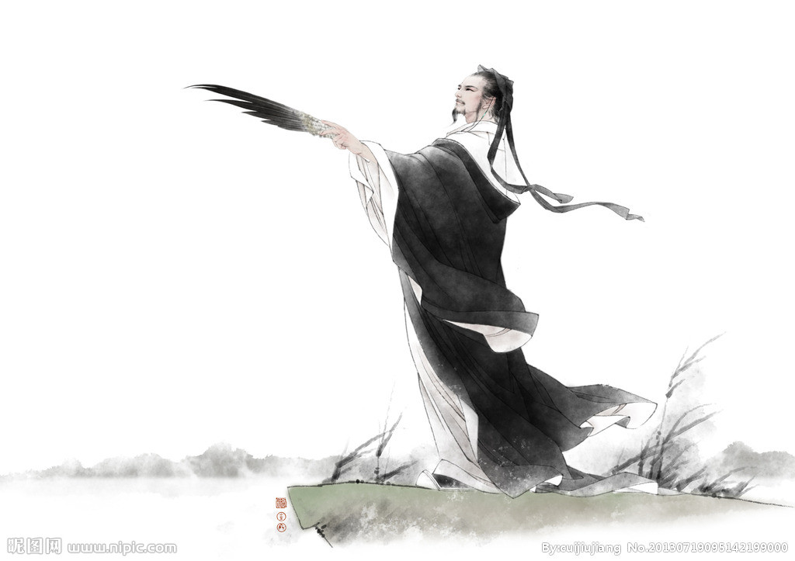

古之贤人，贱为布衣，贫为匹夫！何为“布衣”
在我国古代有很多杰出的人物，在功成名就之后，尽管已是锦衣玉食，地位显赫，却不忘记自己曾是平民。 因此之故，在大庭广众之中，他们常常自称“布衣”，并且以此为荣，借以表露心迹。
那么，何为“布衣”呢？辞书的诠释有二。一曰布制衣服，谓衣着俭朴。如《大戴礼记·曾子制言》所云：“布衣不完，疏食不饱。 ”二曰借指平民，谓地位低微。古代平民不能衣锦绣，故有此称。 如《荀子·大略》所云：“古之贤人，贱为布衣，贫为匹夫。”不过，只要仔细玩味，就会发现布衣之谓往往还包含自谦、自豪、自信、自诩、自警、自励之意。
秦朝丞相李斯说：“斯乃上蔡布衣，闾巷之黔首，上不知其驽下，遂擢至此。” 李斯的话，是在他自家寿宴上讲的，于踌躇满志的同时，也流露出自警、自励之意（《史记·李斯列传》）。
西蜀丞相诸葛亮说：“臣本布衣，躬耕于南阳，苟全性命于乱世，不求闻达于诸侯。” 诸葛亮的话，是他在出师伐魏时，向后主刘禅上表中所讲的，表现了他的谦逊、自勉（《三国志·蜀书·诸葛亮传》）。
唐代诗人李白也自称：“白，陇西布衣，流落楚汉。” 李白的话，是他向荆州刺史韩朝宗上书时说的，接着他较为详细地陈述了自己的经历、学识和抱负，表现了自豪和自信（李白《与韩荆州书》）。
在人们的印象中，布衣往往是诚朴、敦厚，乃至耿介而有操守的表现，令人感到肃然起敬；而“锦衣”则不同，常常是权势、地位的象征，令人望而生畏。 据历史记载，战国时代的纵横家苏秦，当他身佩六国相印、锦衣还乡时，车骑辎重到达洛阳，“昆弟妻嫂侧目，不敢仰视，俯伏侍取食”，威风大得很。 至于明代的锦衣卫，更是如狼似虎，横行无忌，他们的种种暴行，简直是令人发指而又不寒而栗。
值得注意的是，在历史长河中，由布衣转化为锦衣者，固然为数不少；而由锦衣转化为布衣者，也不乏其人。 如南朝梁代的一些王子，他们平时锦衣玉食，作威作福，而一旦梁朝灭亡，则树倒猢狲散，不少人流落他乡，成为布衣平民。
所以庾信在《哀江南赋》中发出“咸阳布衣，思归王子”的慨叹。这里的布衣王子思归，除了怀念梁朝故国之外，大概也包含着对昔日“锦衣玉食”的眷恋吧？ 然而，历史无情，悔之晚矣。